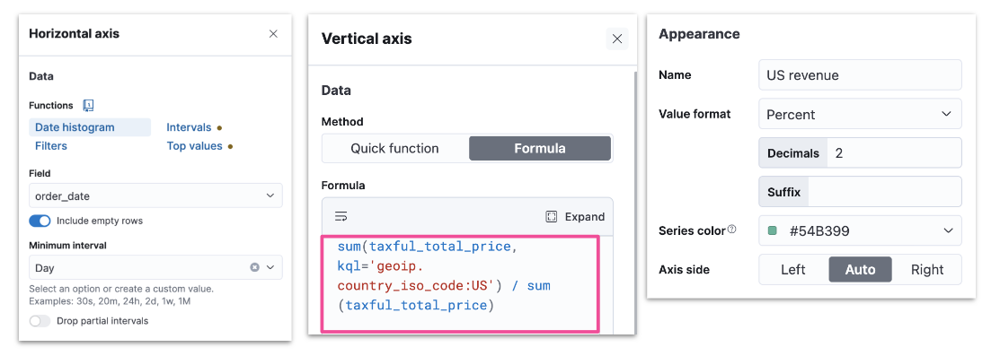
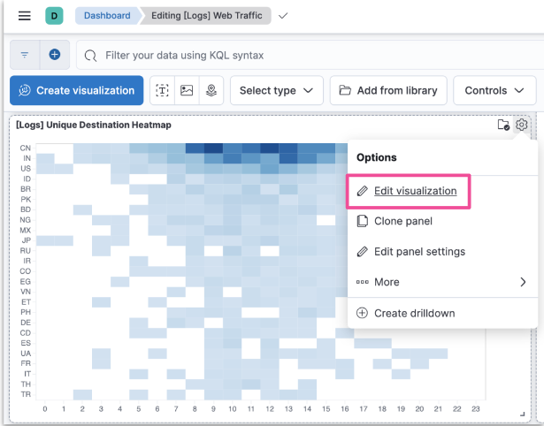

Advanced Kibana
Formulas
Lens Formulas
- Divide two values to produce a percent
- Metric for subset of docs over entire dataset
- This week metric over last week metric
- Metric for individual group over all groups
Formulas Categories
- ES metrics
- average, min, max, sum, etc
- Time series functions that use ES metrics
- cumulative_sum, moving_average, etc
- Math functions
- abs, round, sqrt, etc
- Pick and edit dashboard
- Edit lens
- Understand context
- Examine formula
Formula Example: filter radio

Runtime Fields
The Need for Runtime Fields
- ES stores data in indices
- Kibana queries data stored in ES indices
- To run fast queries ES uses structured data by default
- There are some situations that require querying unstructured data
- Add fields to existing documents without reindexing your data
- Work with your data without understanding how it's structured
- Override the value returned from an indexed field at query time
- Define fields for a specific use without modifying its structure
Schema On Write vs On Read
- ES uses schema on write by default
- All fields in a document are indexed upon ingest
- Runtime fields allow ES to also support schema on read
- Data can be quickly ingested in raw form without any indexing
- Except for certain necessary fields such as timestamp or response codes
- Other fields can be created on the fly when queries are run against the data
Schema On Write in Detail
- Applied during data storage
- Better search performance
- Need to know data structure before writing
- Not flexible as the schema cannot be changed
Schema On Read in Detail
- Applied during data retrieval
- Better write perfomance
- No need to know data structure before writing
- More flexible as the schema can be changed
Runtime Fields and Painless Scripts
- Use Painless scripts to
- retrieve a value of fields in doc
- compute something on the fly
- to emit a value into a field
- Use the created field in
- queries
- visualizations
- Can impact Kibana performance
Add a Runtime Field
- Discover
- Lens
- Data view
Create a Runtime Field
- Provide a name
- Define the output type
Create a Custom Label
- Optionally customize how to display your runtime field in Kibana
Set a Value
- Define a Painless script to compute a value
Set a Format
- Optionally set a format to display the runtime field in the way you like
Preview and Save
- Save your runtime field when it looks good
- You can preview any documents you want through the arrows
Notes on Using Runtime Fields
- Benefits
- Add fields after ingest
- Does not increase index size
- Increases ingestion speed
- Readily available for use
- Promotable to indexed field
- Compromises
- Can impact search performance
- based on script
- Index frequently searched fields
- e.g., @timestamp
- Balance performance and flexibility
- indexed fields + runtime fields
- Can impact search performance
Vega
Vega and Vega-Lite
- Vega
- Open source visualization grammar
- Declarative language for visualization
- Uses JSON for describing
- Vega-Lite
- Higher level language
- Built on top of Vega
- Used to rapidly create common statistical graphics
Vega-Lite Visualization
- Panel can use data from
- ES
- Elastic Map Service
- URL
- Static data
- Kibana panel supports HJSON, though both Vega-Lite and Vega use JSON
Getting Started with Vega-Lite
- Visit the Vega-Lite example gallery: http://vega.github.io/vega-lite/examples
- Select any example to see its JSON specification
Creating a Custom Vega-Lite Visualization
- To see the visualization in Vega or Vega-Lite in Kibana
- copy the JSON specification of a Vega-Lite example
- create a new custom visualization in Kibana
- paste the specification in the editor
- click "Update"
Retrieve Data from ES
- Use the data clause to retrieve data from ES
- Specify a url clause with a
%timefield%,index, andbody - And a format clause with a property
"data": {
"url": {
"%timefield%": "...",
"index": "...",
"body": {
...
}
},
"format": {
"property": "..."
}
}
Vega-Lite in Sample Dashboards
- Color intensity shows the number of unique visitors
- X-axis shows daily hours
- Y-axis shows countries

Editing the Sample Visualization
- You can check the JSON used to create the custom visualization
Body Example
body: {
aggs: {
countries: {
terms: {
field: geo.dest
size: 25
}
aggs: {
hours: {
histogram: {
field: hour_of_day
interval: 1
}
aggs: {
unique: {
cardinality: {
field: clientip
...
size: 0
}
Transform Example
transform: [
{
flatten: ["hours.buckets"],
as: ["buckets"]
},
{
filter: "datum.buckets.unique.value > 0"
}
]
mark: {
type: rect
tooltip: {
expr: "{
\"Unique Visitors\": datum.buckets.unique.value,
\"geo.src\": datum.key,
\"Hour\": datum.buckets.key}"
}
}
Encoding Example
encoding: {
x: {
field: buckets.key
type: nominal
scale: {
domain: {
expr: "sequence(0, 24)"
}
}
axis: {
title: false
labelAngle: 0
}
},
y: {
field: key
type: nominal
sort: {
field: -buckets.unique.value
}
axis: {title: false}
},
color: {
field: buckets.unique.value
type: quantitative
axis: {title: false}
scale: {
scheme: blues
}
},
}
Editing the Sample Visualization
- Relies on tokens to render data dynamically based on Dashboard filters
url: {
...
%timefield%: @timestamp
...
%context%: true
index: ...
body: {
...
range: {
@timestamp: {
...
"%timefilter%": true
...
}
```<!-- {% embed footer message="2025 • Created by [d41y](https://github.com/d41y)" %} -->
<div data-embedify data-app="footer" data-option-message="2025 • Created by [d41y](https://github.com/d41y)" style="display:none"></div>
<style>footer { text-align: center; text-wrap: balance; margin-top: 5rem; display: flex; flex-direction: column; justify-content: center; align-items: center; } footer p { margin: 0; }</style><footer><p>2025 • Created by <a href="https://github.com/d41y">d41y</a></p></footer>